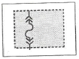
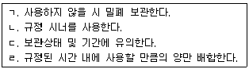
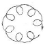
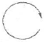
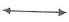
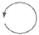
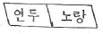
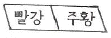
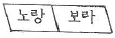
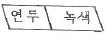

자동차보수도장기능사 (2016-04-02 기출문제)
1과목: 임의 구분
1. 4행정 기관의 회전력에 관한 설명 중 가장 거리가 먼 것은?
- 엔진의 회전력은 토크라고도 불린다.
- 토크는 수직력과 작용점까지의 거리를 곱한 것과 같다.
- 엔진의 회전속도가 N(rpm), 출력은 H(PS), 회전력이 T(kgfㆍm)라면 T = 716H/N이 성립한다.
- 엔진의 회전력은 힘×거리를 시간으로 나눈 값이다.
(정답률: 70%)

2. 실린더 헤드의 재질 중 알루미늄 헤드의 특징이 아닌 것은?
- 열전도 특성이 좋아서 조기점화의 원인이 되는 열점이 잘 생기지 않는다.
- 강도는 높으나 무게가 많이 나간다.
- 압축비를 높일 수 있다.
- 내식성과 내구성이 적다.
(정답률: 75%)
3. 자동차의 차체 모양에 따른 분류로 뒤 차체와 트렁크를 길게 늘려 화물 운반을 겸한 승용차는 무엇인가?
- 세단(Sedan)
- 쿠페(Coupe)
- 컨버터블(Convertible)
- 웨건(Wagon)
(정답률: 81%)
4. 자동차 바디의 구조에서 프론트 바디의 구성품이 아닌 것은?
- 라디에이터 서포트(radiator support)
- 휀더 에이프런(fender apron)
- 센터 필러(center pillar)
- 대쉬 패널(dash panel)
(정답률: 69%)
5. 알루미늄으로 제작된 실린더 헤드에 균열이 생겼다면 다음 중 어떤 용접이 가장 적합한가?
- 전기피복 아크 용접
- 불활성가스 아크 용접
- 산소-아세틸렌 가스 용접
- LPG 용접
(정답률: 69%)
6. 다음 중에서 IPS를 단위 환산을 했을 때 틀린 것은?
- 75 kgfㆍm/s
- 735 Nㆍm/s
- 735 J/s
- 735 kW
(정답률: 63%)
7. 차량의 제원을 표시하는 내용으로 틀린 것은?
- 앞 오버행 : 앞 차축 중심부터 자동차의 가장 앞 부분까지의 수평거리
- 축거 : 앞 차축 중심과 뒤 차축 중심 사이의 수평거리
- 윤거 : 좌, 우 타이어의 접지면 중심 간의 수평거리
- 최저 지상고 : 공차 상태에서 자동차의 접지부 이외에 지표면에서 차체의 가장 낮은 부분까지의 거리
(정답률: 64%)
8. 차체의 롤링 현상을 억제하는 역할을 하는 것은?
- 차동기어
- 스태빌라이저 바
- 프로펠러 샤프트
- 등속 조인트
(정답률: 79%)
9. 다음 중 압력의 단위로 맞게 짝지어진 것은?
- G, dyn, kgf
- Pa, dyn, kgf
- Pa, bar, kgf/cm2
- N, dyn, kgfㆍm
(정답률: 74%)
10. 전기회로에서 아래 그림이 나타내는 심벌의 명칭은 무엇인가?

- 릴레이
- 다이오드
- 전구
- 퓨즈
(정답률: 75%)
11. 다음 중 메탈릭색상의 정면색상을 밝게 만드는 조건은 어느 것인가?
- 도료의 점도가 높다.
- 분무되는 에어 압력이 낮다.
- 기온이 낮다.
- 도료의 토출량이 적다.
(정답률: 57%)
12. 도료 저장 중 발생하는 결함의 방지 대책 및 조치사항을 설명하였다. 어떤 결함인가?

- 피막
- 점도상승
- 겔(gel)화
- 도료분리현상
(정답률: 53%)
13. 샌딩 작업 방법에 대한 설명으로 옳은 것은?
- P400 연마지로 금속 면과의 경계부를 경사지게 샌딩한다.
- 연마지는 고운 것에서 거친 것 순서로 작업한다.
- 단 낮추기의 폭은 1cm 정도가 적당하다.
- 샌딩 작업에 의해 노출된 철판면은 인산아연피막처리제로 방청처리한다.
(정답률: 68%)
14. 워시 프라이머에 대한 설명으로 틀린 것은?
- 아연 도금한 패널이나 알루미늄 및 철판면에 적용하는 하도용 도료이다.
- 일반적으로 폴리비닐 합성수지와 방청안료가 함유된 하도용 도료이다.
- 추천 건조도막보다 두껍게 도장되면 부착력이 저하된다.
- 습도에는 전혀 영향을 받지 않기 때문에 장마철과 같이 다습한 날씨에도 도장이 쉽다.
(정답률: 81%)
15. 용제 퍼핑의 상태를 설명한 것은?
- 상도나 프라서페에 함유된 용제에 의해 거품이 생긴 형태
- 상도 도장 또는 건조 시 표면이 일그러지거나 오그라드는 상태
- 도막표면에 용제가 흘러 심하게 주름이 생긴 형태
- 구도막이나 하도를 연마한 자국이 표면에 확대되어 나타난 상태
(정답률: 60%)
16. 스프레이건에서 노즐의 구경 크기로 적합하지 않은 것은? (단, 단위는 mm이다.)
- 중도전용 : 1.2~1.3
- 상도용(베이스) : 1.3~1.4
- 상도용(크리어) : 1.4~1.5
- 부분도장(국소) : 0.8~1.0
(정답률: 61%)
17. 자동차 도장 기술자에 의한 색상차이의 원인 중 “색상이 밝게” 나왔다. 그 원인 설명 중 맞는 것은?
- 신너의 희석량이 많다. - 공기압력이 높다.
- 신너의 희석량이 많다. - 공기압력이 낮다.
- 신너의 희석량이 적다. - 공기압력이 높다.
- 신너의 희석량이 적다. - 공기압력이 낮다.
(정답률: 60%)
18. 다음 중 더블 액션 샌더 운동방향은?




(정답률: 85%)
19. 보수 도장에서 올바른 스프레이건의 사용법이 아닌 것은?
- 건의 거리를 일정하게 한다.
- 도장할 면과 수직으로 한다.
- 표면과 항상 평행하게 움직인다.
- 건의 이동속도는 가급적 빠르게 한다.
(정답률: 84%)
20. 도료를 도장하여 건조할 때 도막에 바늘구멍과 같이 생기는 현상을 핀홀이라고 한다. 다음 중 핀홀의 원인이 아닌 것은?
- 두껍게 도장한 경우
- 세팅타임을 너무 많이 주었을 때
- 점도가 높은 경우
- 속건 신너 사용 시
(정답률: 60%)
2과목: 임의 구분
21. 자동차 보수도장에서 동력공구를 사용한 폴리에스테르 퍼티 연마에 적합한 연마지는?
- P24 ~ P60
- P80 ~ P320
- P400 ~ P500
- P600 ~ P1200
(정답률: 71%)
22. 습식연마의 장점이 아닌 것은?
- 연마 흔적이 미세하다.
- 건식연마에 비하면 페이퍼의 사용량이 절약된다.
- 차량 표면의 오염 물질의 세척이 동시에 이루어진다.
- 건식 연마에 비해 작업시간을 단축시킬 수 있다.
(정답률: 63%)
23. 도막표면에 연마자국이나 퍼티자국이 생기는 원인은?
- 플래쉬 타임을 적게 주었을 때
- 페더 에지 및 연마 작업 불량일 때
- 용제의 양이 너무 많을 때
- 서페이서를 과다하게 분사했을 때
(정답률: 65%)
24. 플라스틱 소재인 합성수지의 특징이 아닌 것은?
- 내식성, 방습성이 나쁘다.
- 열가소성과 열경화성 수지가 있다.
- 방진, 방음, 절연, 단열성이 있다.
- 각종 화학물질의 화학반응에 의해 합성된다.
(정답률: 63%)
25. 거친 연마지를 블렌딩 도장 시 사용하면 어떤 문제가 발생되는가?
- 도막의 표면이 미려하게 된다.
- 도료가 매우 절약된다.
- 건조작업이 빠르게 진행된다.
- 도료용제에 의한 주름현상이 발생된다.
(정답률: 71%)
26. 고온에서 유동성을 갖게 되는 수지로 열을 가해 녹여서 가공하고 식히면 굳는 수지는?
- 우레탄 수지
- 열가소성 수지
- 열경화성 수지
- 에폭시 수지
(정답률: 68%)
27. 메탈릭 도료의 조색에 관련된 사항 중 틀린 것은?
- 조색과정을 통해 이색현상으로 인한 재작업을 사전에 방지하는 목적이 있다.
- 여러 가지 원색을 혼합하여 필요로 하는 색상을 만드는 작업이다.
- 원래 색상과 일치한 색상으로 도장하여 상품가치를 향상시킨다.
- 원색에 대한 특징을 알아둘 필요는 없다.
(정답률: 81%)
28. 마스킹 페이퍼와 마스킹 테이프를 한곳에 모아 둔 장치로 마스킹 작업 시에 효율적으로 사용하기 위한 장치는?
- 틈새용 마스킹재
- 마스킹용 플라스틱 스푼
- 마스킹 커터 나이프
- 마스킹 페이퍼 편리기
(정답률: 79%)
29. 플라스틱 부품류 도장 시 주의해야 할 사항으로 옳은 것은?
- 유연성을 주기 위해 점도를 낮게 한다.
- 유연성을 주기 위해 점도를 높게 한다.
- 건조 온도는 약 100℃ 이상으로 한다.
- 건조 온도는 약 80℃ 이하에서 실시한다.
(정답률: 68%)
30. 보수도장 작업 후에 폴리싱을 하는 이유가 아닌 것은?
- 도장도막의 미관을 향상시키기 위해
- 도장과 건조 중에 생긴 결함을 제거하기 위해
- 먼지나 이물질 등을 제거하기 위해
- 도막 속에 있는 연마자국을 제거하기 위해
(정답률: 59%)
31. 연필 경도 체크에서 우레탄 도막에 적합한 것은?
- 5H
- F~H
- H~2H
- 2H~3H
(정답률: 67%)
32. 도장작업 중 프라이머 서페이서의 건조 방법은?
- 모든 프라이머 서페이서는 강제 건조를 해야 한다.
- 2액형 프라이머 서페이서는 강제건조를 해야만 샌딩이 가능하다.
- 프라이머 서페이서는 자연건조와 강제건조 두 가지를 할 수 있다.
- 자연 건조형은 열처리를 하면 경도가 매우 강해진다.
(정답률: 73%)
33. 도료 및 용제의 보관창고에 가장 우선되어야 할 사항은?
- 난방
- 냉방
- 청소
- 환기
(정답률: 82%)
34. 솔리드 색상의 색상변화에 대한 설명 중 틀린 것은?
- 솔리드 색상은 시간경과에 따라 건조전과 후의 색상변화가 없다.
- 색을 비교해야 할 도막표면은 깨긋하게 닦아야 정확한 색을 비교할 수 있다.
- 색상도료를 도장하고, 클리어 도장을 한 후의 색상은 산뜻한 느낌의 색상이 된다.
- 베이지나 엘로우 계통의 색상에 클리어를 도장했을 때 산뜻하면서 노란색감이 더 밝아 보이는 경향이 있다.
(정답률: 71%)
35. 스프레이 부스에 대한 내용으로 맞지 않는 것은?
- 강제배기설비는 작업자가 스프레이 분진의 유해한 유기용제 가스를 흡입하는 것을 방지한다.
- 흡기 필터는 먼지 등이 도막에 붙지 않도록 깨끗한 공기를 공급한다.
- 배기 필터는 스프레이 분진을 포집하여 작업장의 오염을 방지하고 또 주변 환경의 오염도 방지한다.
- 구도막을 제거하고 퍼티를 연마할 때 발생하는 분진을 흡입하여 여과시켜 배출한다.
(정답률: 63%)
36. 특수안료 중에는 독성안료도 있다. 다음 중 독성안료를 사용하는 도료는?
- 자동차용 도료
- 건축용 도료
- 플라스틱용 도료
- 선박용 도료
(정답률: 71%)
37. 조색용 시편으로 가장 적합하지 않은 것은?
- 종이 시편
- 철 시편
- 필름 시편
- 나무 시편
(정답률: 65%)
38. 다음 중 색료의 3원색이 아닌 것은?
- 마젠타(Magenta)
- 노랑(Yellow)
- 시안(Cyan)
- 녹색(Green)
(정답률: 65%)
39. 안전ㆍ보건표지에서 경고 표지의 색상으로 올바른 것은?
- 바탕은 파란색, 그림은 흰색
- 바탕은 흰색, 그림은 파란색
- 바탕은 검정색, 그림은 노랑색
- 바탕은 노란색, 그림은 검정색
(정답률: 59%)
40. 얇은 판에 드릴작업 시 재료 밑의 받침은 무엇이 적합한가?
- 나무판
- 연강판
- 벽돌
- 스테인레스판
(정답률: 68%)
3과목: 임의 구분
41. 안전ㆍ보건표지의 종류와 형태에서 그림이 나타내는 것은?
- 보행금지
- 비상구
- 일방통행
- 안전복착용
(정답률: 80%)
42. 안전하게 공구를 취급하는 방법이 아닌 것은?
- 공구를 사용한 후 제자리에 정리하여 둔다.
- 사용 전에 손잡이에 묻는 기름은 닦아야 한다.
- 예리한 공구 등을 주머니에 넣고 작업을 하여서는 안 된다.
- 작업 중 숙련자는 공구를 던져서 전달하여 작업능률이 높인다.
(정답률: 85%)
43. 연삭작업 시 안전사항으로 틀린 것은?
- 보안경을 반드시 착용해야 한다.
- 숫돌 차의 회전은 규정 이상을 넘어서는 안 된다.
- 숫돌과 받침대 간격은 가급적 멀리 유지한다.
- 스위치를 넣고, 연삭하기 전에 공전상태를 확인 후 작업해야 한다.
(정답률: 77%)
44. 에어 컴프레셔의 압력이 전혀 오르지 않을 때의 원인이 아닌 것은?
- 역류방지 밸브 파손
- 흡기, 배기 밸브의 고장
- 압력계의 파손
- 언로우더의 작동 불량
(정답률: 52%)
45. 스프레이부스의 보호구 착용으로 적절하지 않은 것은?
- 내용제성 장갑
- 부스복
- 방진 마스크
- 방독 마스크
(정답률: 69%)
46. 전기 광택기 관리 요령으로 틀린 것은?
- 각부에 장치되어 있는 나사가 느슨해져 있는 곳이 없는지 정기적으로 점검한다.
- 카본 브러쉬는 브러쉬 홀더 내에서 자유롭게 활주할 수 있도록 깨끗하게 한다.
- 전선부분에 상처를 내지 않고 기름이나 물이 묻지 않도록 각별히 주의한다.
- 작업 후 보관은 특별히 신경 쓸 필요 없이 찾기 쉬운 곳에 둔다.
(정답률: 83%)
47. 스프레이건 세척작업 중 발생하는 유해물질이 아닌 것은?
- 솔벤트
- 과산화물
- 폴리아미드
- 이소시아네이트
(정답률: 61%)
48. 가솔린, 톨루엔 등 인화점이 21℃ 미만의 유류가 속해있는 분류 항목은?
- 제1석유류
- 제2석유류
- 제3석유류
- 제4석유류
(정답률: 60%)
49. 색상환에서 가장 먼 쪽에 있는 색의 관계를 무엇이라 하는가?
- 보색
- 탁색
- 청색
- 대비
(정답률: 65%)
50. 다음 중 가장 깊고 먼 느낌을 주는 색상은?
- 남색
- 보라
- 주황
- 빨강
(정답률: 68%)
51. 유채색에 흰색을 혼합하면 어떻게 되는가?
- 명도가 낮아진다.
- 채도가 낮아진다.
- 색상가 낮아진다.
- 명도, 채도가 다 낮아진다.
(정답률: 49%)
52. 먼셀 표색계의 색상환에서 중성색에 속하는 색은?
- 청록
- 녹색
- 주황
- 파랑
(정답률: 51%)
53. 동일 색상의 배색에서 받는 느낌을 가장 옳게 설명한 것은?
- 강한 대칭의 느낌
- 활동적이고 발랄한 느낌
- 부드럽고 통일성 있는 느낌
- 화려하고 자극적인 느낌
(정답률: 78%)
54. 중간혼색을 설명한 것으로 옳은 것은?
- 혼합하면 명도가 높아진다.
- 명도, 채도가 낮아진다.
- 명도는 높아지고 채도는 낮아진다.
- 명도나 채도에는 변함이 없다.
(정답률: 39%)
55. 다음 중 주목성의 특징으로 틀린 것은?
- 명시성이 높은 색은 주목성도 높아지게 된다.
- 따뜻한 난색은 차가운 한색보다 주목성이 높다.
- 주목성이 높은 색도 배경에 따라 효과가 달라질 수 있다.
- 빨강, 노랑 등과 같은 원색일수록 주목성이 낮다.
(정답률: 69%)
56. 다음 그림 중 색상거리가 가장 멀고 선명한 느낌을 주는 배색은?




(정답률: 71%)
57. 다음 중 먼셀(Munsell)의 주요 5원색은?
- 빨강, 노랑, 초록, 파랑, 보라
- 빨강, 주황, 녹색, 남색, 보라
- 빨강, 노랑, 청록, 남색, 자주
- 빨강, 주황, 녹색, 파랑, 자주
(정답률: 71%)
58. 다음 중 고명도의 색과 난색은 어떤 성향을 지니고 있는가?
- 수축성
- 진출성
- 후퇴성
- 진정성
(정답률: 60%)
59. 먼셀의 20 색상환에서 연두의 보색은?
- 보라
- 남색
- 자주
- 파랑
(정답률: 50%)
60. 색채의 중량감은 색의 3속성 중에서 주로 어느 것에 의하여 좌우되는가?
- 순도
- 색상
- 채도
- 명도
(정답률: 60%)